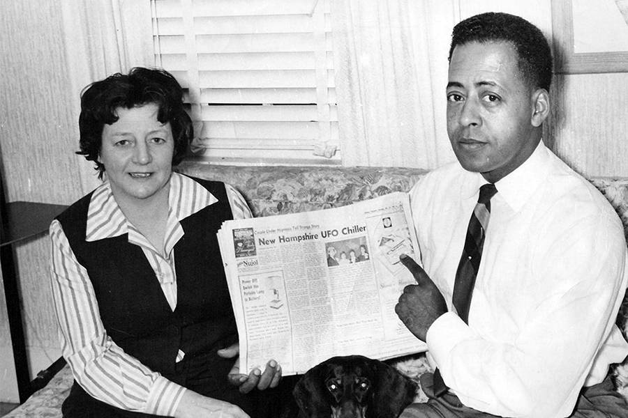
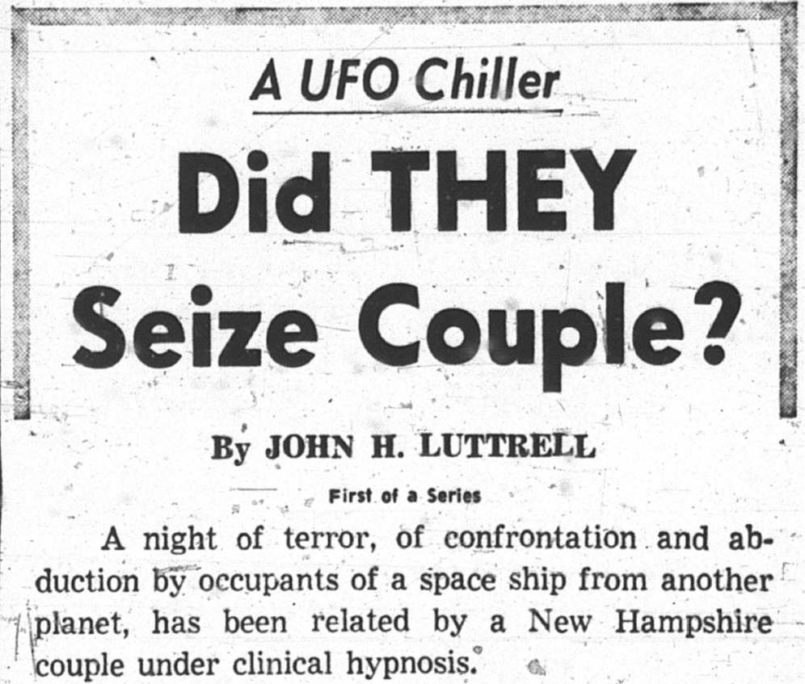
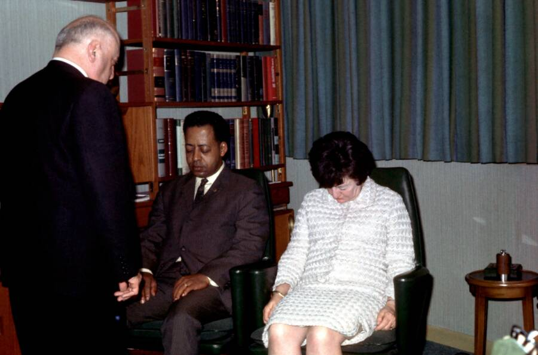
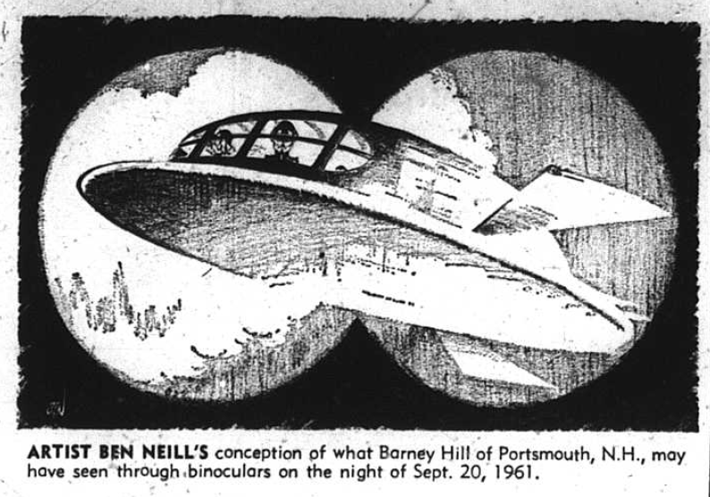
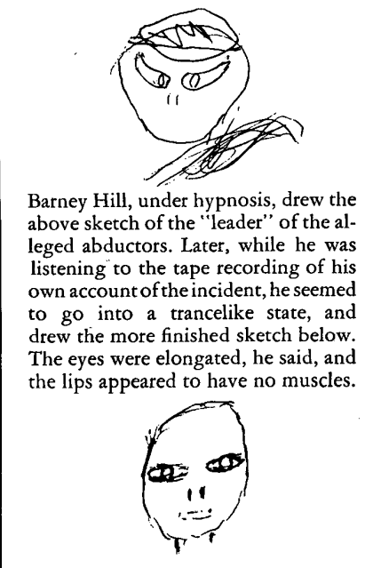

Der Hook: Zwei Menschen, eine Straße, zwei verlorene Stunden
Betty und Barney Hill kommen nicht aus einer UFO-Fanblase. Sie sind ein Ehepaar aus Portsmouth, New Hampshire, unterwegs auf einer langen Heimfahrt nach einem Kanada-Ausflug. In der Nacht vom 19. auf den 20. September 1961 fahren sie durch die White Mountains — müde, aber wach genug, um ein Licht zu bemerken, das sich nicht wie ein gewöhnlicher Stern, Planet oder Flugkörper verhält.
Was danach kommt, ist der Stoff, aus dem moderne UFO-Mythologie gebaut wurde: ein Objekt, das näherkommt. Ein Fernglas. Eine blockierende Angst. Ein metallisches Piepen. Dann eine Lücke. Als die Hills wieder richtig zu sich kommen, sind sie weiter südlich, die Uhr passt nicht mehr zur Strecke, ihre Kleidung und ihr Auto wirken seltsam markiert — und beide tragen ein Gefühl mit sich, dass etwas passiert ist, das sich nicht freiwillig erinnern lässt.


Die Fahrt durch die White Mountains
Die Route ist wichtig, weil sie die Akte erdet: Kanada-Grenze, White Mountains, Portsmouth. Kein Raumschiff über einer Großstadt, sondern eine dunkle, einsame Fahrt durch New Hampshire. Genau diese Landschaft macht den Fall so stark. Die Hills berichten zunächst nicht von einer kompletten Entführung, sondern von einer seltsamen Sichtung und einem Zeitproblem.
Das Objekt scheint sich zu bewegen, größer zu werden und näherzukommen. Barney hält an, sieht durch ein Fernglas und glaubt später, Gestalten oder Fenster im Objekt erkannt zu haben. Dieser Moment ist der Kipppunkt: Aus einer UFO-Sichtung wird etwas Intimeres, Bedrohlicheres — als würde die Sache am Himmel plötzlich zurückblicken.
Missing Time: die Lücke, die alles verändert
Als Betty und Barney zu Hause ankommen, stimmt etwas nicht. Die Fahrt hat länger gedauert, als sie sollte. Es gibt eine Erinnerungslücke. In UFO-Akten ist “Missing Time” heute ein Standardmotiv — aber 1961 war genau dieses Motiv noch nicht popkulturell ausgebrannt. Hier wirkt es roh, neu und beunruhigend.
Die Hills bemerken außerdem ungewöhnliche Spuren: Bettys Kleid soll beschädigt oder verfärbt gewesen sein, Barneys Schuhe auffällig abgenutzt, am Auto finden sich Markierungen. Nichts davon ist ein Laborbeweis für Aliens. Aber als Fallstruktur erzeugt es Druck: Sichtung, Angst, Lücke, physische Merkwürdigkeiten, psychische Nachwirkung.
Die Träume und Dr. Benjamin Simon
Nach der Nacht beginnt Betty von Szenen zu träumen, die wie Fragmente einer Entführung wirken. Barney leidet ebenfalls, aber anders: Stress, Angst, körperliche Symptome, innere Blockade. Schließlich landen beide bei Dr. Benjamin Simon, einem Psychiater, der Hypnose einsetzt — nicht als Alien-Jäger, sondern als therapeutisches Werkzeug.
Unter Hypnose entstehen die berühmten Details: Wesen, eine Untersuchung, ein Objektinneres, medizinische Prozeduren, getrennte Wahrnehmungen. Genau hier wird der Fall so schwierig und so faszinierend zugleich. Hypnose kann Erinnerungen öffnen, aber auch formen. Trotzdem bleibt verstörend, dass Betty und Barney in getrennten Sitzungen Motive erzählen, die sich in entscheidenden Punkten berühren.


Barneys Moment: “Ich wollte, ich könnte sicher sein”
Besonders stark ist Barneys innere Spannung. Watson zitiert aus John G. Fullers The Interrupted Journey den Gedanken, dass Barney lieber sicher wäre, dass nichts davon passiert ist — aber nach dem Hören seiner eigenen Tonaufnahmen nicht mehr an diesen Punkt zurückkehren könne. Diese Haltung macht ihn als Zeugen interessant: nicht triumphierend, nicht missionarisch, sondern belastet.
Gerade dadurch wirkt die Akte nicht wie eine simple Sensationsgeschichte. Barney erscheint als jemand, der mit dem eigenen Material ringt. Wenn man den Fall believer-friendly liest, ist genau das der menschliche Kern: Nicht “Ich will, dass ihr mir glaubt”, sondern “Ich weiß nicht, wie ich zu einem normalen Leben zurückfinden soll, wenn meine eigene Stimme etwas erzählt, das ich nicht erfinden wollte.”
Die Sternenkarte und Zeta Reticuli
Ein späterer Mythos-Baustein ist Bettys angebliche Sternenkarte. Unter Hypnose beschreibt oder zeichnet sie eine Karte, die Marjorie Fish Jahre später mit dem System Zeta Reticuli in Verbindung bringt. Für Skeptiker ist das dünn: Sternenmuster lassen sich unterschiedlich interpretieren, und nachträgliche Zuordnungen sind gefährlich. Für die UFO-Kultur wurde daraus aber ein Schlüsselbild.
Zeta Reticuli wurde durch den Hill-Fall zu einem der bekanntesten Namen der Alien-Folklore. Nicht weil Betty damit automatisch einen interstellaren Atlas geliefert hätte, sondern weil der Fall hier eine Brücke schlägt: von persönlichem Trauma zu kosmischer Herkunftsfrage. Plötzlich ist die Akte nicht mehr nur “was geschah auf der Straße?”, sondern “woher kamen sie?”
Warum dieser Fall anders ist
Vor Betty und Barney Hill gab es Sichtungen, Landungen, Kontaktler, bizarre Geschichten und militärische UFO-Akten. Aber der Hill-Fall setzte ein neues Muster: normale Menschen, nächtliche Straße, fehlende Zeit, medizinische Untersuchung, kleine humanoide Wesen, Hypnose, Trauma und spätere Medienwelle. Praktisch jedes große Entführungsnarrativ danach trägt Teile dieser DNA.
Das macht den Fall nicht automatisch wahr. Aber es macht ihn historisch mächtig. Wenn man Alien-Entführungen verstehen will, führt kein Weg an den Hills vorbei. Sie sind der Urtext, der Schockmoment, die erste große Akte, in der UFOs nicht nur über uns fliegen — sondern angeblich in das intimste menschliche Territorium eindringen: Erinnerung, Körper und Angst.

Skeptische Gegenlesung
Eine saubere Akte muss die Gegenposition benennen. Skeptiker verweisen auf Stress, Träume, Hypnose-Suggestion, kulturelle Einflüsse, Fehlwahrnehmung und die Möglichkeit, dass aus einer realen Sichtung nachträglich eine komplexere Erzählung entstand. Auch die Sternenkarte bleibt umstritten. Kein einzelnes Element zwingt rational zur Alien-Erklärung.
Aber der Fall stirbt daran nicht. Er bleibt, weil die Kombination so schwer aus dem Kopf geht: Zwei Zeugen, ein gemeinsamer Zeitverlust, emotionale Belastung, therapeutische Dokumentation, frühe Presse, Archivmaterial und eine Erzählung, die lange vor dem heutigen UFO-Internet bereits fast alle späteren Motive enthält.
Schlusswort: Die Akte, die zurückblickt
Betty und Barney Hill sind nicht nur ein Fall. Sie sind der Ursprung eines ganzen Erzählraums. Man kann zweifeln, man kann vorsichtig bleiben, man kann Hypnose kritisch sehen — und trotzdem anerkennen: Diese Nacht in den White Mountains hat etwas geöffnet.
Vielleicht war es eine Fehlwahrnehmung, die durch Trauma und Therapie mythologisch wurde. Vielleicht war es eine reale Begegnung, die unsere Sprache bis heute nicht richtig greifen kann. Genau zwischen diesen Polen lebt die Akte. Und deshalb bleibt sie so unheimlich: Nicht weil sie alles beweist, sondern weil sie seit über sechzig Jahren nicht wirklich verschwindet.